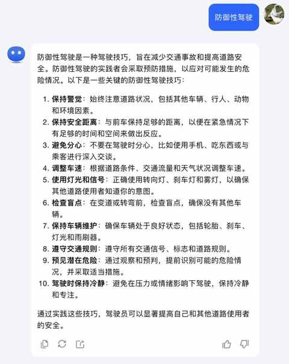
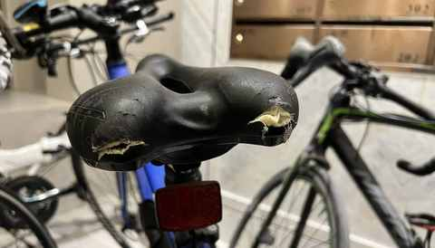
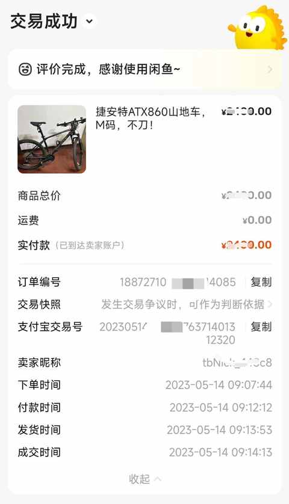
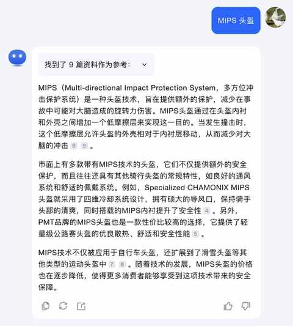
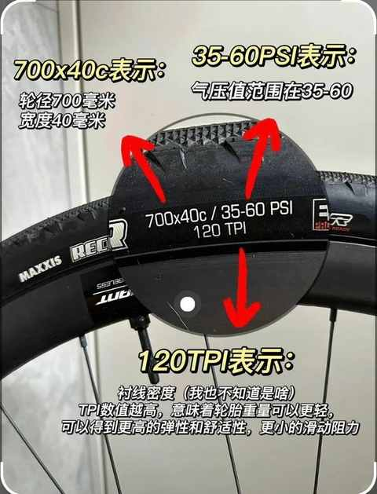
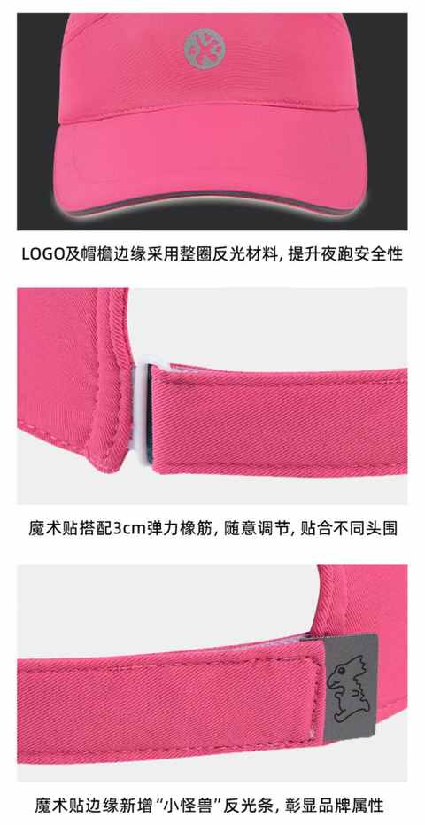
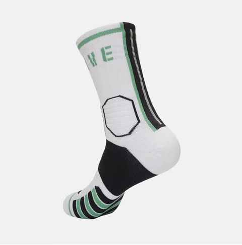

聊聊我贯彻在日常中的重要原则：主动安全
- 主动安全就是把安全细节落到实处，把安全放在第一位。
幼儿园小朋友都知道要注意安全，不过日常生活中还是能遇到不少忽略安全的现象：不戴头盔，戴头盔不系紧、开车变道不打灯……
例如：
网络上提到的比较多的：防御性驾驶

上周剪头发，理发师就问我头发有点塌，是不是经常戴头盔，我回复说有一阵查的多就习惯了，理发师则回复说他没被查到过，不能说他没有安全意识，但可能不够多。
2. 要做到主动安全，需学习各种必要措施
吃过亏之后，往往会长记性，但更好的是不吃这个亏，通过其他人的分享，也能去针对性调整。
例如：
去年 4 月份骑车摔了，直接脸部着地，眼眶骨折。
在派出所查到监控的时候，民警都说戴头盔了就是简单的擦伤。

虽然摔车，但骑行是一项值得坚持的运动，在查看不少关于骑行的内容之后，迅速补齐各种安全上的短板，该学的学，该买的买，吃一堑长一智。
主要是如下调整：
1）提升车辆稳定性
把之前的公路车卖掉，在闲鱼买了山地车

2）购买支持 MIPS 的头盔
以防万一，提高头盔的安全阈值

3）学习骑行基础知识
轮胎的胎压在外侧有标注，要让胎压在合理范围

1️⃣ 骑行前要检查胎压和刹车性能
2️⃣ 每次骑行均佩戴头盔、骑行手套、骑行眼镜
3️⃣ 夜晚骑行时，前灯和后灯都打开，前灯亮度到最大，后灯开闪烁模式
4️⃣ 白天骑行也打开 后灯且开闪烁模式
5️⃣ 下雨天不骑行，地面不干骑行
6️⃣ 不去车辆多的路线骑行
7️⃣ 严格遵守交通规则
……
3. 把主动安全贯彻在消费行为中
最近一段时间买的袜子、帽子、T恤、鞋子，都有反光条的，在夜间能最大程度被识别到。


4. 主动安全的重要前提，不暴露在不安全的情景中
日常通勤中严格遵守交通规则
遇到施工区域、工程车之类的绕行
不边走路边看手机
……